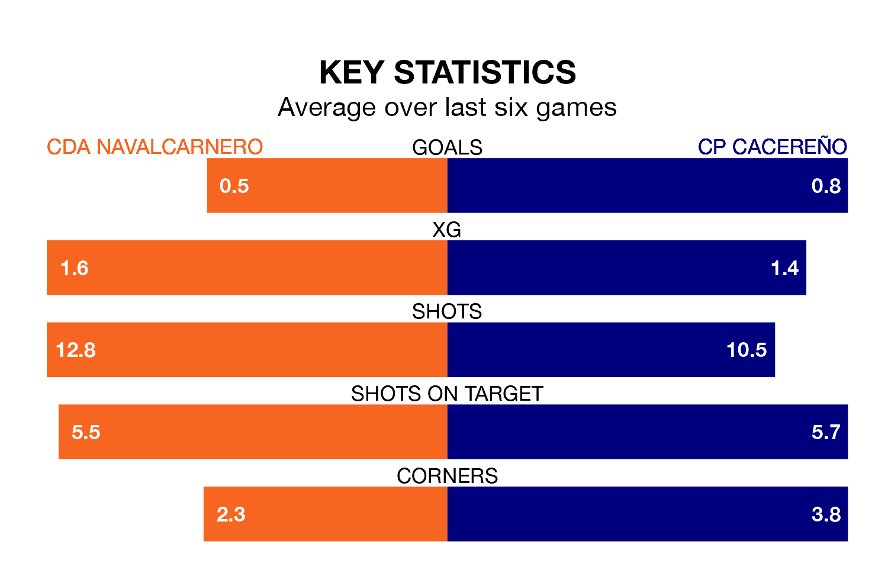

CDA Navalcarnero are on a terrible run ahead of hosting CP Cacereño at the Estadio Municipal Mariano González on Sunday, with just two points collected from their last six games.
CDA Navalcarnero have picked up two draws and four losses in their last six Segunda División RFEF Group 5 games, and face a CP Cacereño side whose last six games have brought two wins and two draws.
CDA Navalcarnero are 16th in the table after 17 games, of which they have won three and drawn six, earning 15 points.
CP Cacereño are three places ahead of the hosts in 13th, with five wins and six draws putting them on 21 points.
With 15 goals in 17 games so far this season, CDA Navalcarnero are scoring at below the league average rate with 0.9 goals per game. And they are conceding more than average, letting in 22 goals at a rate of 1.3 per game.
The away side, meanwhile, are average scorers, with 1.1 goals per game. They have conceded 1.4 goals per game.
CDA Navalcarnero's last match was on January 7, a 0-0 draw against Talavera CF.
CP Cacereño lost 5-1 against CD Numancia last time out, also on January 7.
Updated: 15:34, 08/01/24